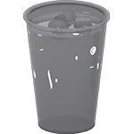

 Venha visitar o Ponto do Refresco. Este é um exemplo de lanchonete fictícia. Veja o que os usuários, que na realidade não existem acharam da experiência: O melhor lugar pra comprar um refresco é no Ponto do Refresco! O ponto de Refresco está sempre disponível quando preciso comprar uma bebida. Recomendo. Um suco, um chá e por que não: um belo de um copo de água com gelo porque ninguém é de ferro.